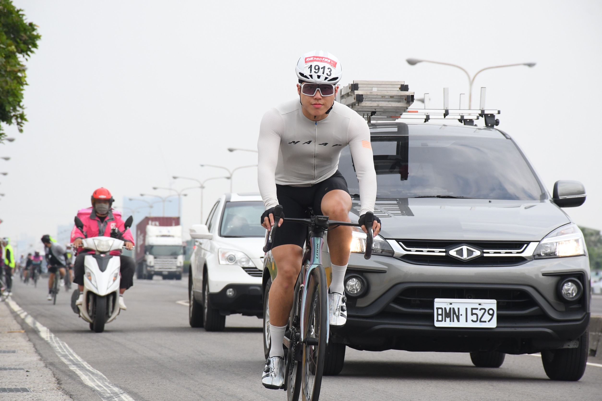
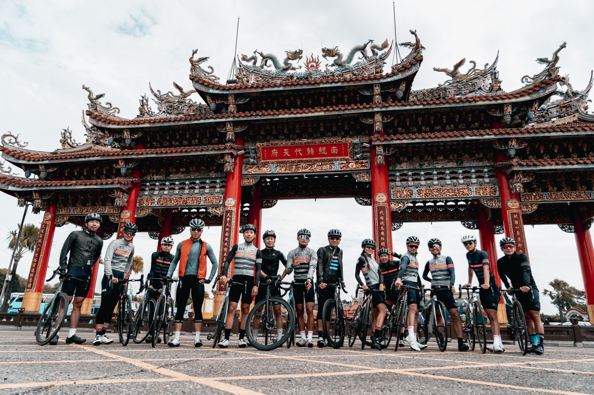
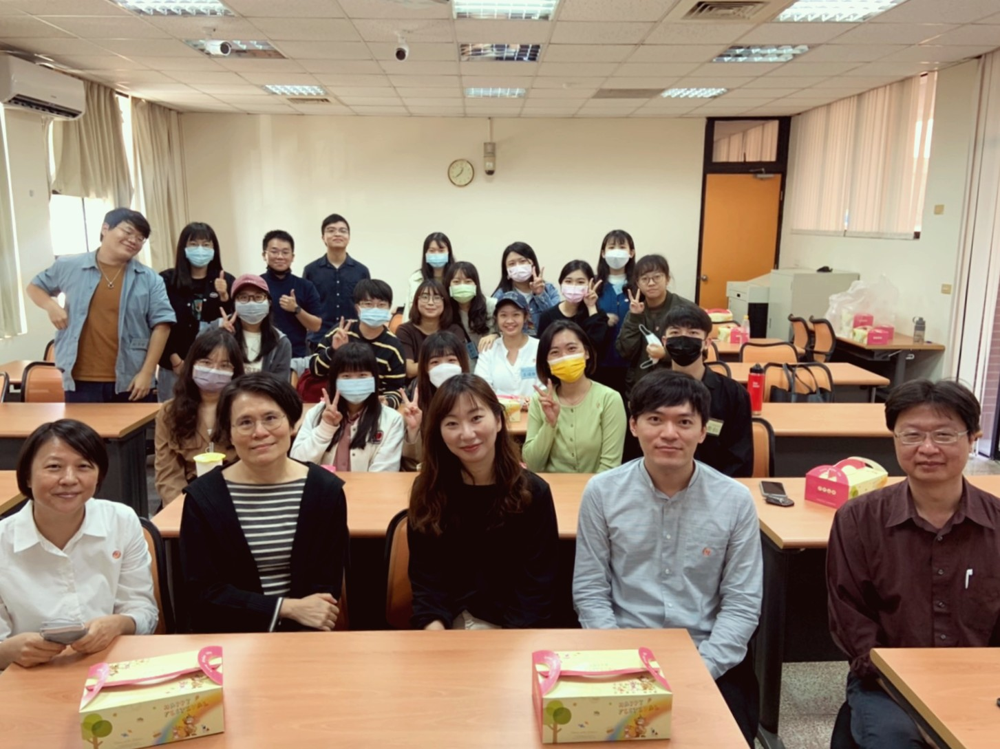
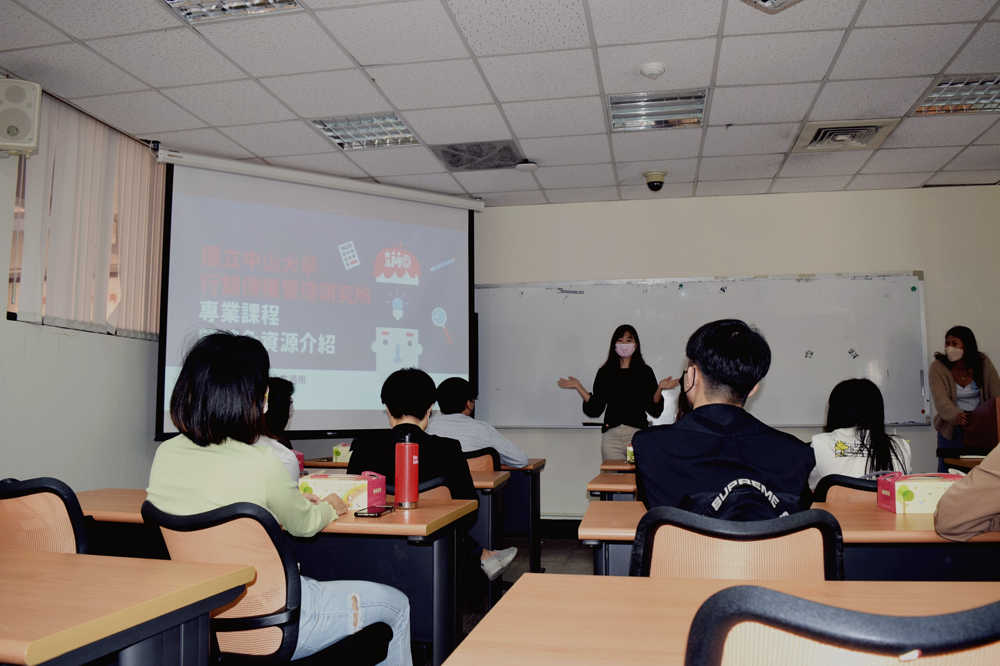
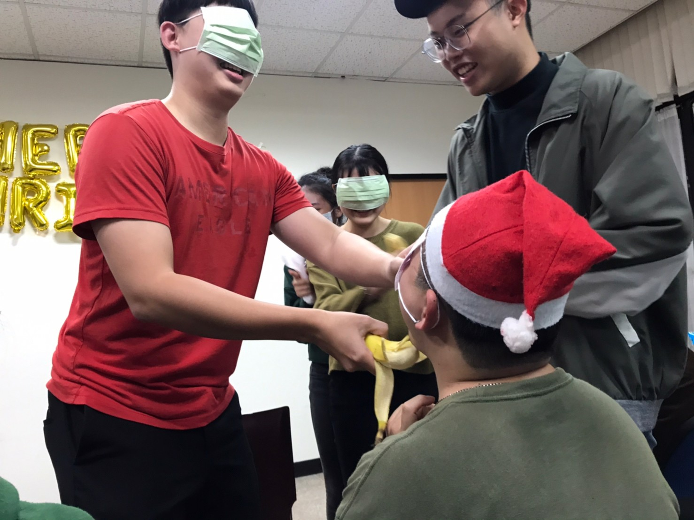
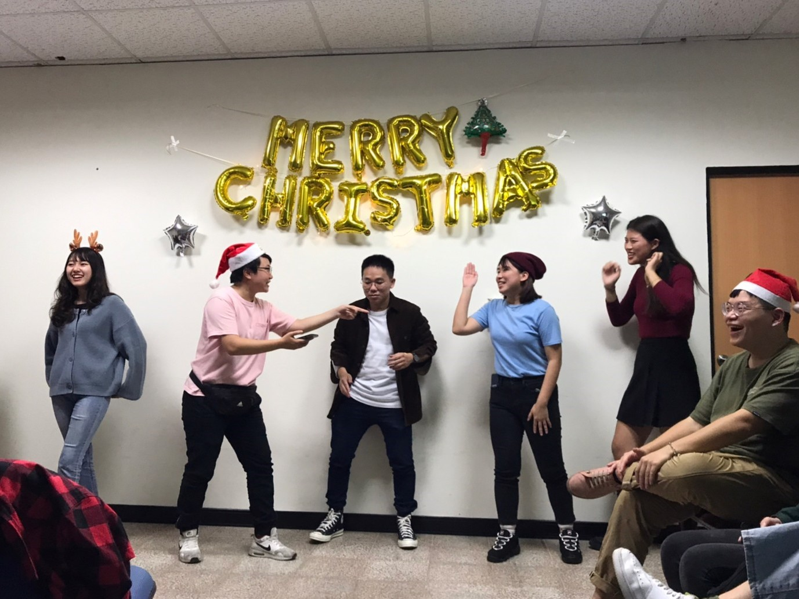
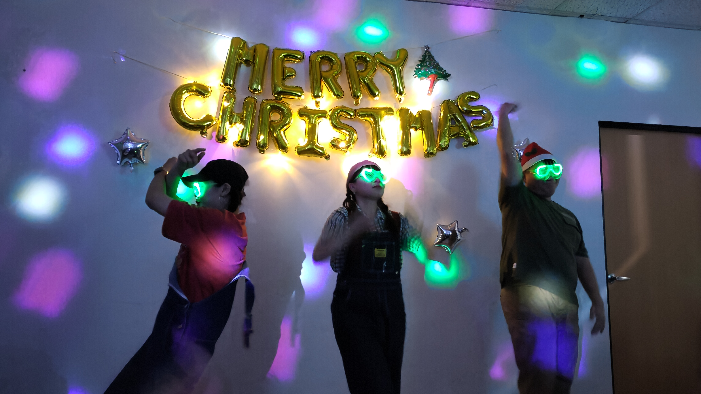
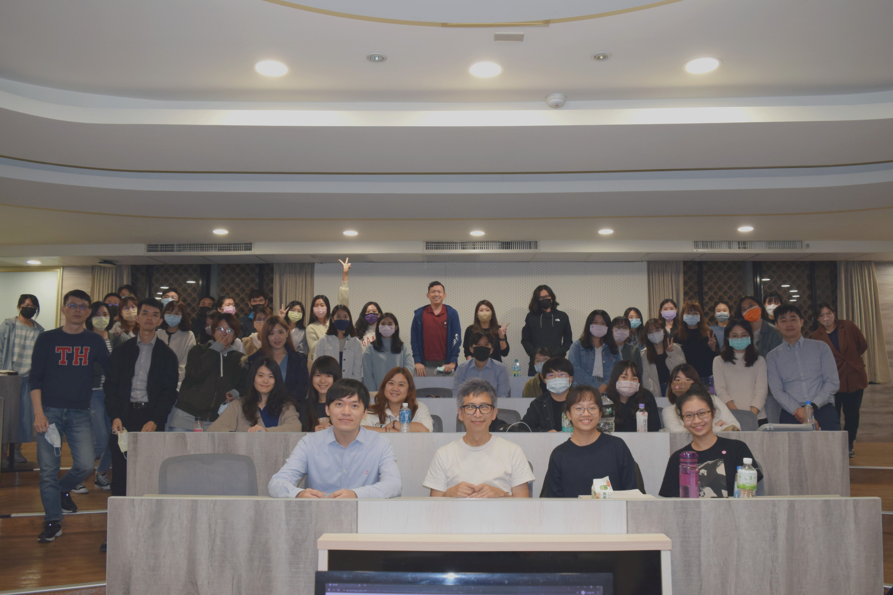
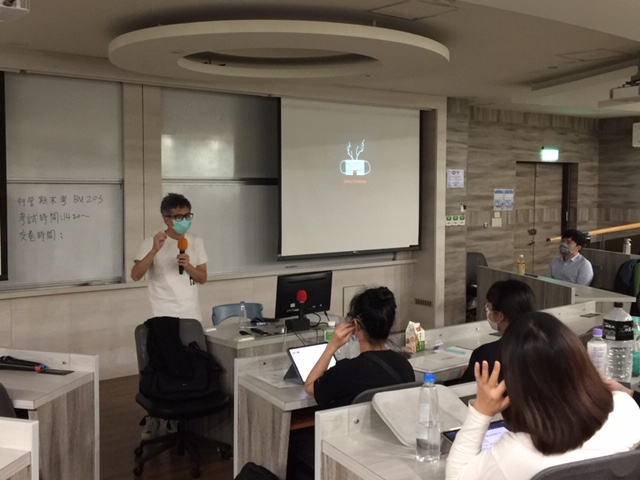
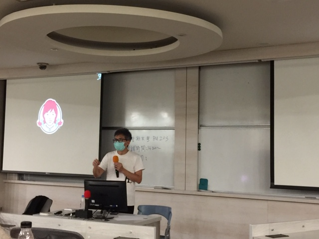

追求生活與學業的平衡 培養興趣拾回研究的熱忱
在生活與學業之間取得平衡，是研究生們充實自我、延續研究熱忱的關鍵。然而於現實生活，許多研究生為了寫出高品質的論文，整日埋頭於研究之中，忽略了課餘興趣愛好的培養，導致累積的壓力無處釋放。於是本次行傳電子報封面人物邀請到將騎自行車視之為興趣，且曾挑戰過公路自行車賽的行傳碩二黃凱林同學進行專訪，與大家分享如何在繁重的研究之餘兼顧興趣愛好的培養，以獲得心靈上的滿足來緩解壓力的侵蝕。

從零開始不困難 一位單車好手的誕生
近來憑藉優秀的學業表現，凱林同學申請上至美國加州大學河濱分校攻讀碩士雙聯學位的機會。除了專注於所上課業，凱林在課堂之餘，也是一位業餘的單車好手。自2021年起，凱林在朋友的帶領下，開始接觸自行車運動。凱林認為，台灣的自行車環境非常完善，很適合經驗較少的新手。密集的便利商店，可以讓新手隨時從中獲得能量補給，倘若輪胎需要打氣，超商也有提供打氣筒借用服務，因此凱林非常推薦自行車這項運動給喜歡運動的讀者們。

發展興趣排解壓力 打造美好生活型態
平衡生活與課業是研究生們碩士生涯的重要課題，而自行車的騎乘即帶有體驗生活與調節研究壓力的雙重功能。凱林表示，騎車不僅可以一邊與朋友談天，一邊欣賞優美的自然景觀，對周遭文化與環境的體驗還能讓人暫時拋開世俗煩惱，從學習壓力中釋放。故對於研究生來說，培養一個能消磨負面情緒的業餘興趣是無可或缺的必要存在，也唯有在精神得到放鬆後，才能在健康的狀態下，繼續專注於研究，產出更為優秀的作品。

邁出嘗試的第一步 化擔憂為改變動力
如何在繁忙的學業課程中，展開課外興趣的培養？凱林表示，興趣的培養難在於踏出開始的「第一步」，一旦踏出嘗試後，便會發現之前預想的種種難題都只是駐足不前的藉口，例如：今天要念書所以不能去騎車等等的理由。凱林認為萬事起頭難，但只要撥出時間進行首次嘗試，便能在過程中得到不同的體驗，像是透過自然美景排解壓力，為研究路上的自己充電。因此，把握零碎時間去嘗試新事物，便有機會在繁忙的研究生活中獲得喘息，進而找回對生活的熱情。
【行傳活動】
行傳資源大公開 跨領域學習充實碩士生涯
為了讓新生在正式入學前有初步認識系所發展與教學核心的機會，行傳所於12月10日舉辦甄試入學說明會，期望透過實體說明會與師生晤談的活動安排，讓同學們在了解所上可用資源的同時，也能通過與有興趣的教授進行會談，作為日後碩士生涯規劃的依據。

跨領域多元學習 造就未來職場人才
行傳所的核心特色為全台第一所結合行銷與傳播領域的系所，因此所上集結了許多不同背景的同學，有助於學生思想上的碰撞與融合，激發對議題的多元思考。王紹蓉所長表示，行銷涵蓋範圍廣泛，多角化的學習行銷與傳播，勢必能提高同學們對行銷傳播科技趨勢的掌握度，進而將所學應用於工作中。以所長開設的電腦中介傳播課程為例，該門課程即是在兼具行銷與傳播理論下，帶領同學們探討新興傳播科技對於人際、工作與行銷公關的效果影響，顯見所內課程對啟發學生多元思辨的重視。因此所長鼓勵學生學習不同學門的知識，以培養用不同的觀點解釋世界、建構意義的能力。

研究環境資源豐厚 善用兩年定能精實自我
除了跨領域的結合，行傳所還具備國際化、資訊化與實務化的多元特色，讓研究所不僅是學術學習，還能精實不同層面的能力。例如：在國際化特色上，行傳所提供歐洲的雙學位學程，如ESSCA，與歐美大學的交換機會，如加拿大維多利亞大學，讓學生們得以透過交換學習不同文化的處事方式，培養世界觀；在資訊化特色上，行傳所也提供行傳所電子報的實習機會，讓同學們培育文字整合力與時事辨識力，以利於未來在職場用更精準的字詞與人共事。而在實務化特色上，本學期所開設的數據行銷課程帶領同學們應用廣告工具投遞廣告，數位內容與社會網絡分析課程也教導同學運用Ｒ語言進行文字探勘分析，故同學們能在專業化的媒體工具學習下獲得實務技能。行傳所擁有眾多資源，如果善用兩年研究所廣泛學習，必能滿載而歸。

學長姐熱情諮詢 解答研究所疑惑
在說明會尾聲的問答互動時間，有新生針對碩士課程的修課學分調配方式進行發問，目前就讀碩一的學姐表示，行傳所的畢業總學分為38學分，每學期的修習上限為15學分，然而碩士與大學相異處在於為碩士課程需要花費大量時間進行小組討論與論文評析的撰寫，故擁有足夠的時間完成知識的吸收是重要的，因此不鼓勵新生將學分排滿，應保留時間給自己彈性運用。

【行傳活動】
齊聚行傳溫馨過節 聖誕夜夜秀歡樂登場
學期即將邁入尾聲，行傳所一年一度的聖誕聯歡晚會也在12月22日華麗登場。所學會幹部策劃一連串的表演與抽獎活動，晚會現場也提供零食飲料，讓參與的同學們有得吃、有得看。碩一同學們準備了精彩表演來一較高下，碩二同學也擔任評審，提供充滿趣味性的點評，期望透過今晚的熱烈互動，所上的同學們能一同度過歡笑不斷的聖誕晚會。

各路表演大車拚 脫口秀開場超吸睛
今晚的活動由所學會正副會長柯乃瑜與鍾小惠共同擔任主持人。在眾所期待的表演環節中，首先登場的是廖偉弘同學，他以研究所生活作為脫口秀主題，其幽默的段子與豐富的肢體語言瞬間炒熱現場氣氛。緊接著上場的是由葉曉嵐、陳韋君、曾怡庭、唐茹韻同學所組成的「美宣小夥伴」，她們將粵語教學結合歌曲演唱，讓在場的同學們能跟著琅琅上口的旋律學習粵語。而王頌雅、莊曉雯、陳韻儀、唐茹韻同學則組成「宿舍199」，透過矇眼餵香蕉的小遊戲，拉進現場同學間的距離。

唱歌跳舞樣樣來 多才多藝行傳人
活動下半場由邱渝雯、廖品瑄、王傳昀、鄭至娟、廖偉弘同學組成的「我的骨盆最端正」開場，五人統一穿著綠色系的運動服裝，充滿活力地跳起「骨盆端正舞」，青春洋溢的表演讓大家拍手叫好。陳宣彤、童鈺婷、賴禹彤、林昱妍與陳芊蕙同學也組成「五大洋劇團」，重新編排充滿童年回憶的「真珠美人魚」歌曲，並融入正反派角色陣營等戲劇元素，高潮迭起的劇情讓同學們直呼過癮。而五大洋劇團也以「特殊才藝專家」為主題，展現四種罕見的特殊技能，像是以最快速度唸完二十六個英文字母、拍手最大聲等，並邀請台下身懷絕藝的同學上場比拚，共同角逐「專家」頭銜。

重現好評表演陣容 嶄新節目一同登場
除了碩一同學精心準備的表演外，碩二同學們也拿出自己的拿手好戲。古湞宇、柯乃瑜同學不只深情合唱歌曲「洋蔥」，還與黃裕軒同學組成三人組合，改編知名性侵防治影片「杰哥不要」，以逗趣的配音腔調呈現音樂劇，用歡笑感染全場觀眾。壓軸登場的是去年大受好評的「全糖小珍奶」，由鍾小惠、張維真及柯乃瑜同學組成，三人穿戴螢光色的服裝配件唱跳「魔動北極星」，重現去年晚會開場的風采，同時展現更加純熟的唱跳實力。

抽獎環節人人有獎 聖誕晚會滿載而歸
在晚會尾聲，評審們決選出今晚表演的前三名以獲得加碼的抽獎機會，最終由「五大洋劇團」抱走冠軍。而作為晚會重頭戲的抽獎環節，除了有碩二同學準備的豐富獎品，所上老師也提供了精美的禮物，希望讓所有參與的同學都能滿載而歸。最後，為紀念這彌足珍貴的時光，碩一碩二同學們一起拍下許多照片留念，相信在所學會的精心規畫下，大家都能在2021年的聖誕節留下美好的回憶。
【行傳講座】
洞察消費者需求 打造深植人心的廣告宣傳
廣告能觸動人心，進而打動消費者購買產品，並非只因天時地利人合，一個廣告的成功其實是有規則可以依循的。中山大學行銷傳播管理研究所偕同慶聯有線電視股份有限公司、港都有線電視股份有限公司於12月24日邀請聯廣傳播集團的執行創意總監黃守全先生來分享廣告內容的創作秘辛，揭開廣告文案奪人耳目的神秘面紗。

鎖定目標客群習性 引發集體共鳴感
「如何讓貓吃辣椒？」黃總監以毛澤東和手下制定決策的故事作為創意思考開場，決策過程有人認為直接把辣椒放進貓嘴、也有人認為將辣椒包進魚肉，而毛澤東則利用貓咪的自然習性，將辣椒切碎貼在貓屁股，讓貓感到刺癢而自然舔去屁股之方式達成其目標，來凸顯事情解決方式有許多種，但利用天性達到目標是最有效的。因此，在定位產品的目標客群時，廣告商須先了解消費者的習性，才能針對不同族群提出不同的情境訴求廣告，打造產品賣點，進而觸動消費者購物慾望。

闡述故事行銷品牌 觸動消費者的心
「我們的任務不是說真話，而是讓別人相信我們在說真話。」黃總監引用美國廣告大師威廉˙伯恩巴克的名言，說明中華航空「說好的旅行」案例，中華航空廣告運用不同日常角色對出國的渴望，以詼諧的故事情節，引發不同消費者共感，進而刺激消費者做出購買機票出國的行為。可見廣告商的任務是用消費者不曾想過的詮釋來包裝真實需求，以故事作為廣告媒介，讓消費者沉浸在廣告塑造的情境，激發他們對需求的渴望。
操作話題性行銷 創造群眾參與感
現今誇大不實的廣告氾濫，造成消費者對廣告內容的信任度不如以往，甚至連以巨額邀請名人代言也不見得為品牌商帶來相對效益，如：HTC邀請小勞勃道尼拍攝品牌廣告，卻導致大眾只記住名人，而忽略產品的出現。因此，品牌商能如何有效讓消費者關注品牌？黃總監認為創造消費者參與感是廣告製作的要點，即利用社群製造有趣話題，透過消費者自主參與，達到群眾關注，也因為品牌聲量是由消費者帶出而不是品牌方，故能減輕品牌商業配感，使人提高對品牌關注度與好感。黃總監以溫蒂漢堡「不用冷凍牛肉」的宣傳手法為例，溫蒂漢堡小編號召線上遊戲玩家砸壞遊戲中的冷凍櫃，以表示拒用冷凍牛的決心。所以品牌以生動的方式吸引消費者自主參與，其實也間接傳達品牌理念，達到高度話題性。

「品牌必須明白，消費者能夠創造比你們更多的訊息，所以是消費者擁有你的品牌，而不是你自己」黃總監在活動尾聲以可口可樂行銷長Joe Tripodi的名言提醒在場同學，廣告宣傳的重點在於洞悉消費者，故從消費者生活擷取靈感建立廣告訴求核心，進而引發話題提高消費者參與品牌機會，是成功向大眾傳達品牌理念的關鍵。期望經由本次講座之分享，同學們在未來都能透過對日常瑣事的觀察，發想出獨具創意且對受眾有影響力之廣告。
行銷傳播講座預告
講者／服務單位
講座講題
講座日期
待定
待定
待定
==本刊完==
感謝您閱讀本期電子報，您的支持是我們進步的動力
若有任何建議與鼓勵，請於上方惠賜您的寶貴意見，謝謝！
若有任何建議與鼓勵，請於上方惠賜您的寶貴意見，謝謝！